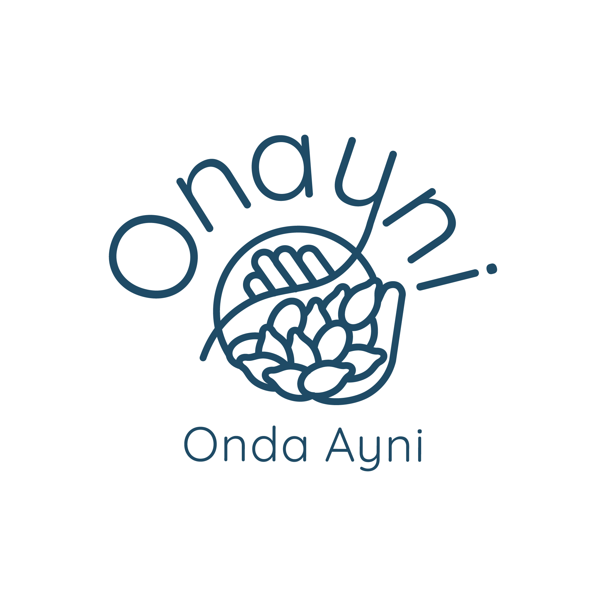

Reciprocidad que nutre
Descubre la auténtica riqueza de los Andes. Cada compra apoya directamente a las comunidades agrícolas y promueve prácticas regenerativas.
Selección premium de los Andes Peruanos, cultivados con amor y respeto
En la cosmovisión andina, Ayni representa la reciprocidad sagrada entre las personas y la Pachamama (Madre Tierra). Es un intercambio armonioso donde cada acción tiene una respuesta equilibrada.
En Onda Ayni, hemos hecho de este principio milenario nuestra filosofía central. Trabajamos directamente con cooperativas de pequeños agricultores en las regiones andinas, eliminando intermediarios y garantizando un pago justo que supera hasta en un 40% los precios del mercado convencional.
El poder transformador de cada compra consciente
Promovemos prácticas que regeneran el suelo y protegen la biodiversidad andina.
Invertimos en educación, salud e infraestructura para las comunidades productoras.
Formamos a los agricultores en técnicas sostenibles y gestión empresarial.